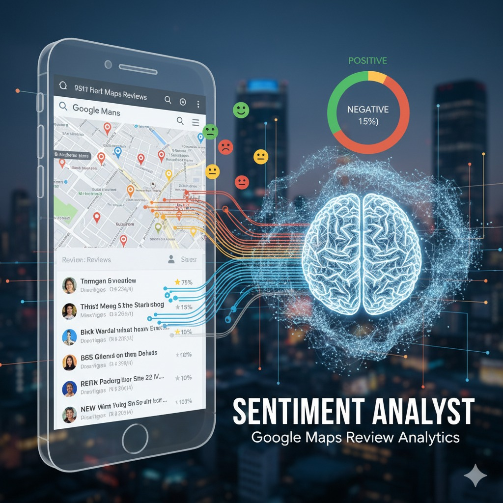
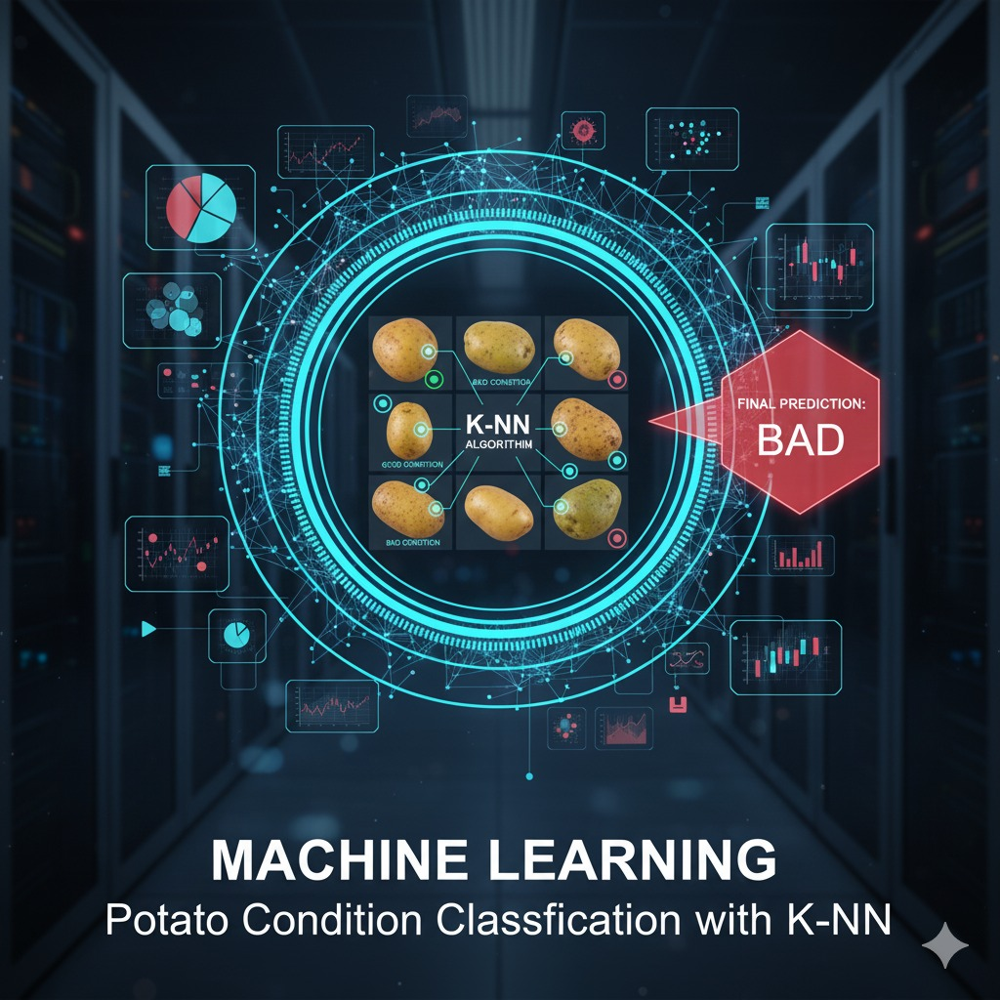

0x01 About Me
Seorang ahli statistik dengan pengalaman lebih dari 2 tahun dalam data mining, analisis, engineering, sains, dan visualisasi. Mahir dalam Python, SQL, R, Power BI, dan Tableau, saya membangun solusi data dan model AI untuk mendukung pengambilan keputusan yang lebih cerdas.
Pekerjaan saya didorong oleh pola pikir analitis yang kuat dan pengetahuan interdisipliner yang luas di berbagai domain sosial, ekonomi, dan teknologi.
Download Full CV~ Work Experience ~
Juli 2024 - Saat ini
Process & Tools Specialist
PT, TEMANS
- Membuat laporan dasbor menggunakan Power BI.
- Memberikan pelatihan tentang cara menggunakan alat AI.
- Mengembangkan dan mengotomatisasi sistem dokumen menggunakan AI.
Januari 2023 - Saat ini
Freelancer Data
FASTWORK
- Mengerjakan proyek Analisis Sentimen, Prediksi & Peramalan, dan SVM.
{" Skills Visualization {">"}
$ Notable Projects $

Sentiment Analysis on Reviews
Menganalisis ulasan pelanggan dari Google Maps untuk mengukur sentimen publik dan memberikan wawasan untuk peningkatan produk.

Sales Growth Forecasting Model
Membangun model peramalan deret waktu untuk memprediksi penjualan bulanan, membantu optimasi inventaris dan strategi pemasaran.
Conversational AI Chatbot
Merancang chatbot berbasis NLP yang mampu memahami dan merespons pertanyaan pengguna secara natural untuk meningkatkan interaksi pelanggan.

ANN for Decision Making
Mengimplementasikan Artificial Neural Network dengan algoritma backpropagation untuk menciptakan sistem pendukung keputusan yang cerdas.

Stock Price Forecasting with RNN
Mengaplikasikan Deep Learning menggunakan Recurrent Neural Network (RNN) untuk memprediksi pergerakan harga saham secara akurat.

Potato Condition Classification
Membangun sistem klasifikasi gambar menggunakan algoritma K-NN untuk mengidentifikasi dan memisahkan kondisi kentang (baik/buruk).